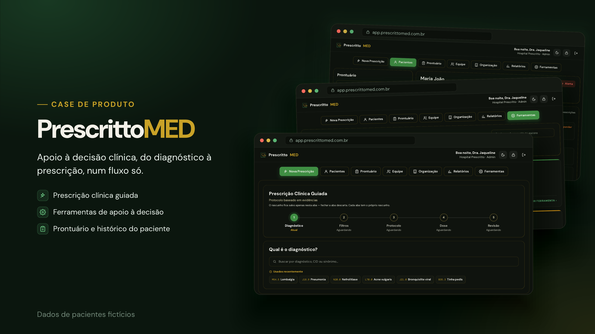
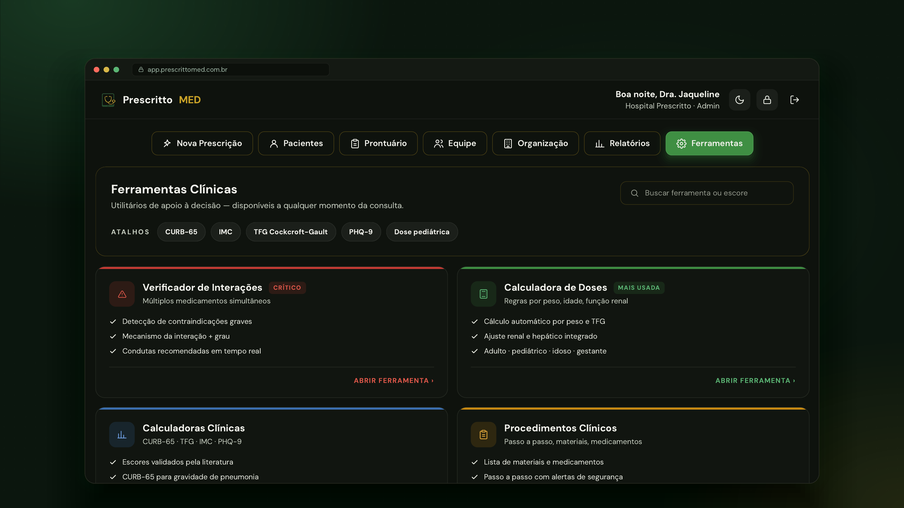
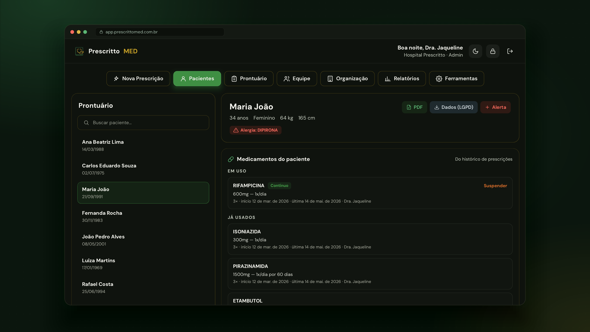

01 / SAÚDE · SAAS · IA
PRESCRITTOMED
Plataforma web de apoio à decisão clínica com IA — pesquisa de diagnósticos, protocolos, ferramentas clínicas e prescrição digital em um único ambiente.
- CATEGORIA
- Healthcare · SaaS · AI
- STATUS
- ● EM PRODUÇÃO · Usuários ativos
- PAPEL
- Full Product Development — 100% do desenvolvimento técnico
- FRONTEND
- Interface clínica · Fluxos de uso
- BACKEND
- Regras de negócio · APIs · Dados
- ARQUITETURA
- Módulos e serviços estruturados para operar como um único sistema
- IA
- Funcionalidades de IA integradas ao produto
- CORE
- Pesquisa clínica · Protocolos · Ferramentas clínicas · Prescrição
- OUTPUT
- Receita digital · Documento em PDF
PAPELDESENVOLVIMENTO COMPLETO
OWNERSHIP100% DO TÉCNICO
STATUS● PRODUÇÃO · USUÁRIOS ATIVOS

VÍDEO · PRODUTO EM USO
VÍDEO E CAPA DO PRODUTO
Salve o vídeo como imagens/prescrittomed-demo.mp4 e a capa como imagens/prescrittomed-capa.png.
FIG. 02 — PRODUTO EM USO · VÍDEO EM LOOP COM CAPA DO CASE

TELA 01 · FERRAMENTAS
imagens/prescrittomed-ferramentas.png

TELA 02 · PRONTUÁRIO
imagens/prescrittomed-interacoes.png